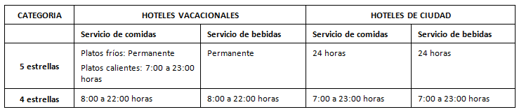
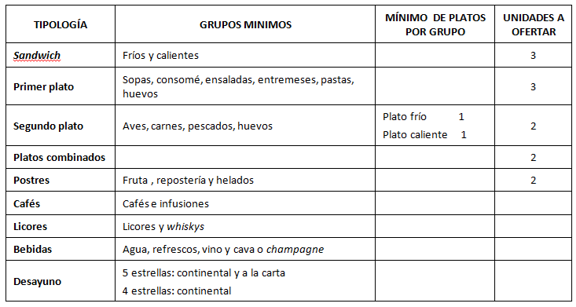

Como su nombre indica, se trata de un servicio de alimentos y bebidas a realizar en las unidades de alojamiento que ocupa en el establecimiento. Así, el cliente dispone de la posibilidad de tomar en su habitación el desayuno, almuerzo, cena o cualquier otro tipo de comidas y bebidas.
Uno de los pilares sobre los que se basa este servicio es el tiempo de servicio, la amabilidad y, sobre todo, la discreción del personal.
No cabe duda de que se trata de un servicio extraordinario, a pesar de lo cual, es obligatorio en los establecimientos de cuatro y cinco estrellas, mientras que el resto, pueden limitarse a informar al cliente de su existencia y dotar las habitaciones de una carta suficientemente variada, indicando los platos, sus precios, los horarios de atención y el sistema de solicitud de los pedidos.
En los hoteles de cuatro y cinco estrellas, los horarios de servicio serán:

Fuera de este horario, los establecimientos deben disponer de puntos para la obtención de bebidas, ya sea a partir de máquinas dispensadoras o minibares. En cualquier caso, en los establecimientos que no dispongan de minibar, existirá un servicio de bar a las habitaciones con un turno cuya duración será de un mínimo de 16 horas al día.
La carta del servicio de habitaciones se actualizará cada dos años en los hoteles de cinco estrellas, y cada tres años en los hoteles de cuatro estrellas. Esta actualización debe alcanzar al 30 % de los platos y sus acompañamientos. En su confección, la carta debe cubrir las siguientes tipologías y grupos de alimentos:

El servicio debe realizarse en un periodo máximo de 30 minutos, con la excepción de que la elaboración, por su naturaleza, lo impida, haciendo constar esta observación en la carta del servicio. Además, los establecimientos dispondrán del mobiliario adecuado para el servicio y su consumo en las habitaciones, asegurando la temperatura del alimento, si fuera necesario, con la ayuda de armarios o carros térmicos.
Un aspecto fundamental es la existencia de un procedimiento que permita la pronta recogida de los elementos que conforman el servicio.